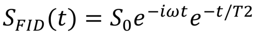
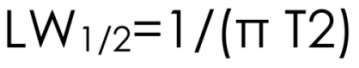

Index
Lecture 07
Sampling and Resolution
• We can only gain resolution, if we sample for a long time
◇ A longer time leads to two signals which are similar diverging
• Resolution is determined at the later time point in the FID (Free induction decay: Wikipedia)
• We need multiple scans for our signal
◇ With one signal only, the noise would be too high
• Aquisition time plus relaxation delay = relaxation time
◇ The aquisition time is the time, where the signal decays
◇ The relaxation delay is a waiting till the next pulse
◇ In 2D or 3D the aquisition time becomes very short → most of the time is the delay time
• D1 (delaytime) is chosen to be that the system relaxes. Therefore you set it equal to T1.
◇ Reminder: after T1 you have 1/e of spins relaxed. In 2-3x T1 you have all relaxed
▪ T2 is only the dephasing
◇ If you dont wait enough time between pulses → Integral of the peaks are wrong
Pulse-Lengths and Excitation Bandwidths
• Hard pulse: very short pulse with max energy
◇ Therefore even at the ends of the spectrum the pulse is 90° or 180°
• Selective pulse: You can selectively excite or not excite certain ppm
◇ This is done for solvent suppression (ng sample in a lot of sample)
▪ You need to suppress the solvent peak to see your sample
◇ this yields a soft pulse: long duration, low power
• Soft pulses have a nice shape like gaussian, sin etc.
• Pulse lengths can be calibrated
◇ The angle is dependent on the length of the pulse length
◇ If the angle is 90°, the signal is max
◇ The function that describes the intensity of the signal is a sin function
▪ In this function the max is broad and therefore poorly recognizable
▪ Therefore you take 360° because the signal is at 0 again and devide this pulse length by 4
▪ 180° is a bad choice since the system is not in thermal equilibrium (it needs to relax back: mathematically the sin goes to negative at 180°)
◇ This is best done with proton pulses
▪ It is possible by C and N etc. pulses but it is more difficult
◇ C spectra are calibrated by redoing a proton NMR
▪ After a H peak we wait 1/2J (J for H-C coupling) and if after this time the carbon signal comes, you have 90° and therefore a signal of zero.
◇ Mostly, the value of the parameter set given is used
Fourier Transform
• If you have a periodic function (repeating function), then you can synthesize that function as a sum of sin and cos functions
• An NMR signal is a periodic function → A fourier transform is possible
◇ An NMR signal is not a single sin or cos funciton, as we have an overlay of many different frequencies that oscillate
▪ Every oscillation has a preiodicity
• We actually want to decompose the NMR signal into single sin and cos functions → individual frequencies → spectrum
• To actually fourier transform, we overlay a guess function
◇ If it is exactly the same, we get the top of a NMR peak because we multiply the guess and the actual function
▪ If they are identical it is fully positive
◇ If the function is slightly off, we get a big positive part and a small negative part and we are at the side of a peak
◇ And so on. If the funciton is wrong the positive and negative part is equally big → we receive the baseline
• General: We multiply the signal with a guess function.
◇ The better it fits the more positive part the integral has → the positive part of the integral is displayed as the peak

• The function above shows an experimental signal
• The first exponential term is the periodicity and the second one is the decay
• The fourier transform of a 1D spectrum takes a splitsecond
• A 3D fourier transform takes 1 minute
• Today, computers use a special algorithm which is faster than a normal fourier transform
◇ The data points after transformation is always x^2 (1024,2048,4096 etc.)
• The real part of the signal yields an absorbtive lineshape (positive, gaussian like peak)
• The imaginary part of the signal yields a dispersive lineshape (positive and negative peak)
• The max of the real is at the zero of the imaginary signal
◇ The zero is much better definable than the broad max
▪ → lock has mostly dispersive linewidth
Signal Shape, Phase correction and Truncation artifacts
• The linewidth is defined as:

• Lorentzian lineshapes are observed when fourier transforming an exponentially decaying periodic function (our NMR signal)
◇ The lorentzian lineshapes are like NMR peaks should look like
• We need to phase correct our signal
◇ 0th order Phase correction: You apply the same phase correction to all signals
◇ 1th order phase correction: you define a reference. The phase correction is bigger far away from the reference. Therefore the reference is not phased at all
• If we have a purely absorptive signal (pure cos) we have the desired phase
• Since we dont have this (e.g. you change the cable length, you change in which phase the signal arrives at the detector), we need to phase correct
◇ For this you can use the 0th order phase correction, which is the same for the whole spectrum
• The 1th order phase correction is needed because we used the same coil to pulse and record the signal. Therefore we need to wait a little bit (ringing down of the pulse) between pulsing and recording.
◇ During this delay, the spins already precess. The precession is biggest at the side of the spectrum
◇ Therefore we need to do 1th order phase correction
• If you stop recording, before the signal is fully decayed, the spectrum gets wiggly
◇ Why do we stop earlier?
▪ In 2D/3D to reduce the amount of data (here we dont need so much detail, as the signal is spread out in 2D). The recording time is 100 ms but the T2 is 1s
▪ Protein resonance decay very fast, and water (as it is small) very, very small → wiggly water peak
• There are some spectra you will never be able to phase them
◇ If you cant do it, you square the signals → Magnitude Mode Processing → Lineshapes get weird (higher baseline)
• A Fourier Pair is the original function and its fourier transform
◇ From this you get a delta function
• A delta function has 0 width, it is a spike (indefinetly small)
• If you do a FT of a cos, you get two signals (positive one and negative one)
• If you do a FT of a sin, you also get two signals, but one is positive and the other is negative
Zero Filling & Manipulation of the signal by exponential functions
• We can add zeros after the signal which leads to an increase in resolution after FT
◇ We add the same amount of zeros as we have data points. If we add more than that, we do not gain more resolution or information
• We can manipulate the FID with certain functions to get a lot more information
◇ Multiply it with an exponential function
◇ or exp decay
◇ gaussian
◇ etc.
• In C-NMR it is important to do this multiplication as it reduces the background and highlights peaks
◇ In C-NMR, resolution is not a problem, but Signal to Noise (S/N) is
◇ The multiplication makes the lines broader, which we dont care about.
◇ The beginning of the FID is important for S/N, the end for resolution
◇ If you multiply it with an exp funciton, you put emphesis on the beginning of the FID which increases S/N on cost of resolution
◇ However, there is an optimum as if you do this to heavily, the peaks in the late FID will get too broad
▪ The optimum is depending on T2 (because it tells you what the natural decay is)
- If the exp function is exactly T2, it is optimal as it matches with the linewidth
◇ This is called Apodization
◇ In Apodization, the linewidth should correspond to the linebroadening term
• The problem with proton spectra is resolution
◇ Resolution is defined in the later part of FID
▪ Basically you could just a exp growth funciton, but that would introduce wiggles, because it has this ledge at the end where the signal ends
▪ We need a bell shaped curve to avoid this → the multiplication function should always be 0 at the end
◇ There is a Lorentz-to-Gauss transformation
◇ In this term, the lb determines how fast the bell decays and the gb tells you where the maximum is
◇ If i shift the maximum to the right, we increase the resolution